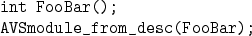
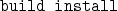

Next: 9.1.2 Writing AVS Coroutines
Up: 9.1 AVS
Previous: 9.1 AVS
Contents
Index
9.1.1 Writing AVS Modules
Before continuing, see the note in § 3.4
on naming conventions.
Now suppose we want to create the module ``foo bar''.
We then do the following:
- In file foo_bar.c, write the functions FooBar and
FooBar_compute.
Use the examples in the avs/modules directory as a guide.
- In pf_modules.c, add the lines:

- In Makefile, add foo_bar.c to the SRC string definition.
- Type

This installs the module library in the directory
$PARFLOW_DIR/avs/mod_lib.
- Test the module library by using the pfavs script.
Next: 9.1.2 Writing AVS Coroutines
Up: 9.1 AVS
Previous: 9.1 AVS
Contents
Index
Steve Smith
2008-06-02